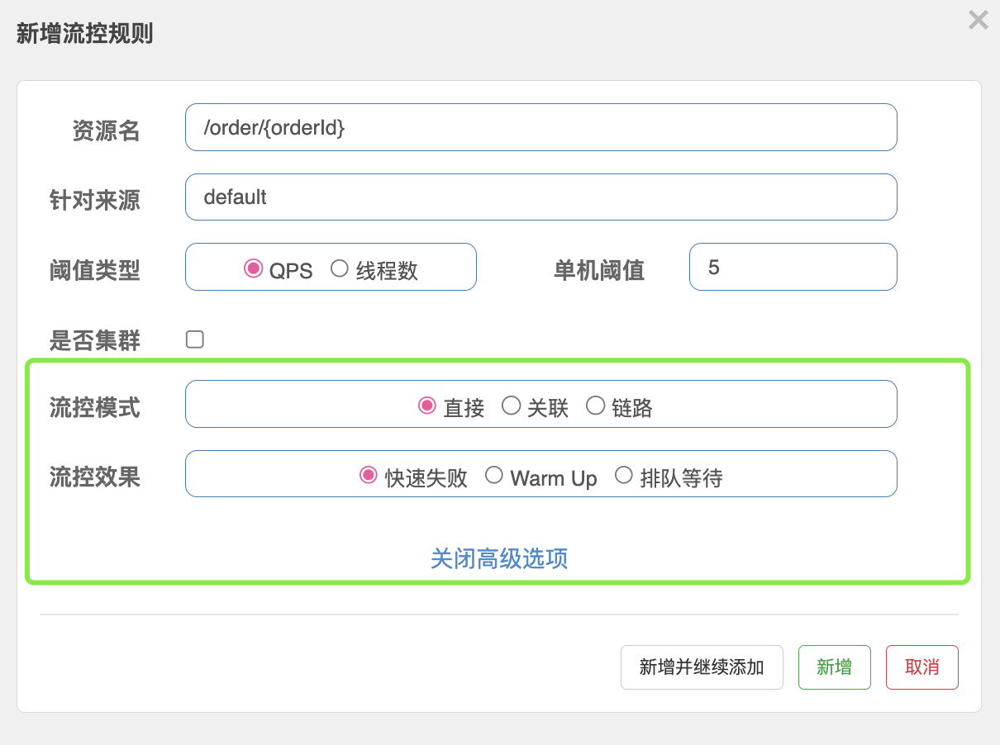
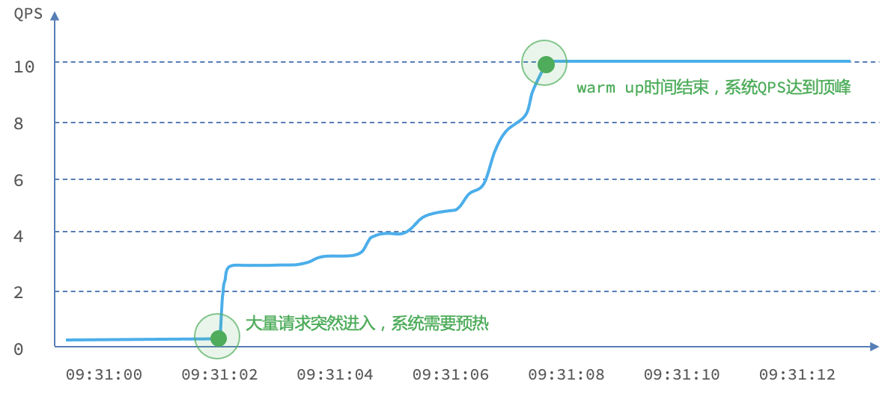
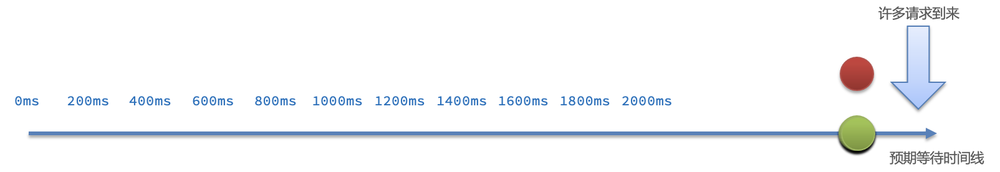
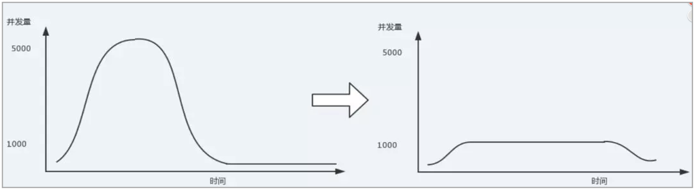

「Sentinel - 3 」-- 流量控制&规则
流量控制&规则
流量控制规则 (FlowRule)
流量规则的定义
重要属性：
| Field | 说明 | 默认值 |
|---|---|---|
| resource | 资源名，资源名是限流规则的作用对象 | |
| count | 限流阈值 | |
| grade | 限流阈值类型，QPS 或线程数模式 | QPS 模式 |
| limitApp | 流控针对的调用来源 | default，代表不区分调用来源 |
| strategy | 调用关系限流策略：直接、链路、关联 | 根据资源本身（直接） |
| controlBehavior | 流控效果（直接拒绝 / 排队等待 / 慢启动模式），不支持按调用关系限流 | 直接拒绝 |
同一个资源可以同时有多个限流规则。
通过代码定义流量控制规则
理解上面规则的定义之后，我们可以通过调用 FlowRuleManager.loadRules() 方法来用硬编码的方式定义流量控制规则，比如：
1 | private static void initFlowQpsRule() { |
流量控制
概述
FlowSlot 会根据预设的规则，结合前面 NodeSelectorSlot、ClusterNodeBuilderSlot、StatistcSlot 统计出来的实时信息进行流量控制。
限流的直接表现是在执行 Entry nodeA = SphU.entry(资源名字) 的时候抛出 FlowException 异常。FlowException 是 BlockException 的子类，您可以捕捉 BlockException 来自定义被限流之后的处理逻辑。
同一个资源可以对应多条限流规则。FlowSlot 会对该资源的所有限流规则依次遍历，直到有规则触发限流或者所有规则遍历完毕。
一条限流规则主要由下面几个因素组成，我们可以组合这些元素来实现不同的限流效果：
resource：资源名，即限流规则的作用对象count: 限流阈值grade: 限流阈值类型，QPS 或线程数strategy: 根据调用关系选择策略
基于QPS/并发数的流量控制
流量控制主要有两种统计类型，一种是统计线程数，另外一种则是统计 QPS。类型由 FlowRule.grade 字段来定义。其中，0 代表根据并发数量来限流，1 代表根据 QPS 来进行流量控制。其中线程数、QPS 值，都是由 StatisticSlot 实时统计获取的。
可以通过下面的命令查看实时统计信息：
1 | curl http://localhost:8719/cnode?id=resourceName |
输出内容格式如下：
1 | idx id thread pass blocked success total Rt 1m-pass 1m-block 1m-all exeption |
其中：
- thread： 代表当前处理该资源的线程数；
- pass： 代表一秒内到来到的请求；
- blocked： 代表一秒内被流量控制的请求数量；
- success： 代表一秒内成功处理完的请求；
- total： 代表到一秒内到来的请求以及被阻止的请求总和；
- RT： 代表一秒内该资源的平均响应时间；
- 1m-pass： 则是一分钟内到来的请求；
- 1m-block： 则是一分钟内被阻止的请求；
- 1m-all： 则是一分钟内到来的请求和被阻止的请求的总和；
- exception： 则是一秒内业务本身异常的总和。
2.1 并发线程数流量控制
线程数限流用于保护业务线程数不被耗尽。例如，当应用所依赖的下游应用由于某种原因导致服务不稳定、响应延迟增加，对于调用者来说，意味着吞吐量下降和更多的线程数占用，极端情况下甚至导致线程池耗尽。为应对高线程占用的情况，业内有使用隔离的方案，比如通过不同业务逻辑使用不同线程池来隔离业务自身之间的资源争抢（线程池隔离），或者使用信号量来控制同时请求的个数（信号量隔离）。这种隔离方案虽然能够控制线程数量，但无法控制请求排队时间。当请求过多时排队也是无益的，直接拒绝能够迅速降低系统压力。Sentinel线程数限流不负责创建和管理线程池，而是简单统计当前请求上下文的线程个数，如果超出阈值，新的请求会被立即拒绝。例子参见：ThreadDemo
2.2 QPS流量控制
当 QPS 超过某个阈值的时候，则采取措施进行流量控制。流量控制的手段包括下面 3 种，对应 FlowRule 中的 controlBehavior 字段：
直接拒绝（
RuleConstant.CONTROL_BEHAVIOR_DEFAULT）方式。该方式是默认的流量控制方式，当QPS超过任意规则的阈值后，新的请求就会被立即拒绝，拒绝方式为抛出FlowException。这种方式适用于对系统处理能力确切已知的情况下，比如通过压测确定了系统的准确水位时。具体的例子参见 FlowqpsDemo。冷启动（
RuleConstant.CONTROL_BEHAVIOR_WARM_UP）方式。该方式主要用于系统长期处于低水位的情况下，当流量突然增加时，直接把系统拉升到高水位可能瞬间把系统压垮。通过”冷启动”，让通过的流量缓慢增加，在一定时间内逐渐增加到阈值上限，给冷系统一个预热的时间，避免冷系统被压垮的情况。具体的例子参见 WarmUpFlowDemo。通常冷启动的过程系统允许通过的 QPS 曲线如下图所示：

匀速器（
RuleConstant.CONTROL_BEHAVIOR_RATE_LIMITER）方式。这种方式严格控制了请求通过的间隔时间，也即是让请求以均匀的速度通过，对应的是漏桶算法。具体的例子参见 PaceFlowDemo。该方式的作用如下图所示：
这种方式主要用于处理间隔性突发的流量，例如消息队列。想象一下这样的场景，在某一秒有大量的请求到来，而接下来的几秒则处于空闲状态，我们希望系统能够在接下来的空闲期间逐渐处理这些请求，而不是在第一秒直接拒绝多余的请求。
基于调用关系的流量控制
调用关系包括调用方、被调用方；方法又可能会调用其它方法，形成一个调用链路的层次关系。Sentinel 通过 NodeSelectorSlot 建立不同资源间的调用的关系，并且通过 ClusterNodeBuilderSlot 记录每个资源的实时统计信息。
有了调用链路的统计信息，我们可以衍生出多种流量控制手段。
3.1 根据调用方限流
ContextUtil.enter(resourceName, origin) 方法中的 origin 参数标明了调用方身份。这些信息会在 ClusterBuilderSlot 中被统计。可通过以下命令来展示不同的调用方对同一个资源的调用数据：
1 | curl http://localhost:8719/origin?id=nodeA |
调用数据示例：
1 | id: nodeA |
上面这个命令展示了资源名为 nodeA 的资源被两个不同的调用方调用的统计。
限流规则中的 limitApp 字段用于根据调用方进行流量控制。该字段的值有以下三种选项，分别对应不同的场景：
default：表示不区分调用者，来自任何调用者的请求都将进行限流统计。如果这个资源名的调用总和超过了这条规则定义的阈值，则触发限流。{some_origin_name}：表示针对特定的调用者，只有来自这个调用者的请求才会进行流量控制。例如NodeA配置了一条针对调用者caller1的规则，那么当且仅当来自caller1对NodeA的请求才会触发流量控制。other：表示针对除{some_origin_name}以外的其余调用方的流量进行流量控制。例如，资源NodeA配置了一条针对调用者caller1的限流规则，同时又配置了一条调用者为other的规则，那么任意来自非caller1对NodeA的调用，都不能超过other这条规则定义的阈值。
同一个资源名可以配置多条规则，规则的生效顺序为：**{some_origin_name} > other > default**
3.2 根据调用链路入口限流：链路限流
NodeSelectorSlot 中记录了资源之间的调用链路，这些资源通过调用关系，相互之间构成一棵调用树。这棵树的根节点是一个名字为 machine-root 的虚拟节点，调用链的入口都是这个虚节点的子节点。
一棵典型的调用树如下图所示：
1 | machine-root |
上图中来自入口 Entrance1 和 Entrance2 的请求都调用到了资源 NodeA，Sentinel 允许只根据某个入口的统计信息对资源限流。比如我们可以设置 FlowRule.strategy 为 RuleConstant.CHAIN，同时设置 FlowRule.ref_identity 为 Entrance1 来表示只有从入口 Entrance1 的调用才会记录到 NodeA 的限流统计当中，而对来自 Entrance2 的调用漠不关心。
调用链的入口是通过 API 方法 ContextUtil.enter(name) 定义的。
3.3 具有关系的资源流量控制：关联流量控制
当两个资源之间具有资源争抢或者依赖关系的时候，这两个资源便具有了关联。比如对数据库同一个字段的读操作和写操作存在争抢，读的速度过高会影响写得速度，写的速度过高会影响读的速度。如果放任读写操作争抢资源，则争抢本身带来的开销会降低整体的吞吐量。可使用关联限流来避免具有关联关系的资源之间过度的争抢，举例来说，read_db 和 write_db 这两个资源分别代表数据库读写，我们可以给 read_db 设置限流规则来达到写优先的目的：设置 FlowRule.strategy 为 RuleConstant.RELATE 同时设置 FlowRule.ref_identity 为 write_db。这样当写库操作过于频繁时，读数据的请求会被限流。
开发中使用
在实际的开发中，常见的是在servlet的Filter层嵌入Sentinel流控。
代码如下：
1 | import com.alibaba.csp.sentinel.Entry; |
其中异常码为个人自定义二方工具包：maple-commons
Sentinel-dashboard流控配置
流控规则
可以为每个资源定义流控规则，在簇点链路界中点击目标资源后面的+流控 按钮，就会出现设置页面，如图：
- 资源名：表示需要进行流控的目标资源名称，就是展示在簇点链路页面中所有资源的名称
- 针对来源：一般都是default
- 阈值类型：QPS or 线程数
- QPS是指对访问目标资源的QPS进行限制
- 线程数是指对访问目标资源的并发度进行限制
- 单机阈值：单节点的访问限制值
其含义是限制 /order/{orderId} 这个资源的单机QPS为5，即每秒只允许5次请求，超出的请求会被拦截并报错。
流控高级选项
限流规则中有两个高级选项，可以对流控模式和流控效果进行进一步的细化，如图：
流控模式
直接：统计当前资源的请求，触发阈值时对当前资源直接限流，默认模式；
关联：统计与当前资源相关的另一个资源，当另一个资源触发阈值时，对当前资源限流；
- 使用场景：比如用户支付时需要修改订单状态，同时用户要查询订单。查询和修改操作会争抢数据库锁，产生竞争。因此当修改订单业务触发阈值时，需要对查询订单业务限流。
- 满足下面条件可以使用关联模式：
- 两个有竞争关系的资源；
- 一个优先级较高，一个优先级较低；当优先级高的资源达到阈值之后对优先级低的资源进行限流，高优先级的资源不受影响。
- 链路：统计从指定链路访问到本资源的请求，触发阈值时，对指定链路限流；
- Sentinel默认只标记
Controller层中的方法为资源，如果要标记其它方法，需要利用@SentinelResource注解，如：
- Sentinel默认只标记
1 |
|
- Sentinel默认会将
Controller方法做context整合 ，这会导致链路模式的流控失效，需要修改application.yml，添加配置：
1 | spring: |
- 使用场景：
- 例如有两条请求链路：
/test1 -> /common和test2 -> /common如果只希望统计从/test2进入到/common的请求，则可以这样配置：
- 例如有两条请求链路：
流控效果
流控效果是指请求达到流控阈值时采取的措施，包括三种：
快速失败：请求达到阈值后，新的请求会被立即拒绝并抛出
FlowException异常。默认流控效果。warm up：预热模式，对超出阈值的请求同样是拒绝并抛出异常。但这种模式阈值会动态变化，从一个较小值逐渐增加到最大阈值。
warm up也叫预热模式，是应对服务冷启动的一种方案（整体实现的方案和Dubbo的服务预热很类似）。请求阈值初始值是
threshold / coldFactor，持续指定时长后，逐渐提高到threshold值。而coldFactor的默认值是3。例如，设置QPS的threshold为10，预热时间为5秒，那么初始阈值就是 10 / 3 ，也就是3，然后在5秒后逐渐增长到10。整个过程如图：

排队等待：让所有的请求按照先后次序排队执行，两个请求的间隔不能小于指定时长。
当请求超过QPS阈值时，快速失败 和 warm up 都会拒绝新的请求并抛出异常。而排队等待则是让所有请求进入一个队列中，然后按照阈值允许的时间间隔依次执行。后来的请求必须等待前面执行完成，如果请求预期的等待时间超出最大时长，则会被拒绝。
例如：QPS = 5，意味着理论上每200ms处理一个队列中的请求；timeout = 2000，意味着预期等待超过2000ms的请求会被拒绝并抛出异常。如果队列中已经存在了10个请求，那么后续的请求等待时间理论上就是 10 * 200 ms = 2000ms，已经到达timeout时间了，请求就会被拒绝。
排队等待的限流效果其实就是流量整形
- 
参考文档：
 微信
微信